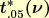

|
1.
Exploratory Data Analysis
1.3. EDA Techniques 1.3.6. Probability Distributions 1.3.6.7. Tables for Probability Distributions
|
|||
| How to Use This Table | This table contains upper critical values of the t* distribution that are appropriate for determining whether or not a calibration line is in a state of statistical control from measurements on a check standard at three points in the calibration interval. A test statistic with ν degrees of freedom is compared with the critical value. If the absolute value of the test statistic exceeds the tabled value, the calibration of the instrument is judged to be out of control. | ||
Upper critical values of t* distribution at significance level
0.05 for testing the output of a linear calibration line at 3 points
ν  ν
1 37.544 61 2.455
2 7.582 62 2.454
3 4.826 63 2.453
4 3.941 64 2.452
5 3.518 65 2.451
6 3.274 66 2.450
7 3.115 67 2.449
8 3.004 68 2.448
9 2.923 69 2.447
10 2.860 70 2.446
11 2.811 71 2.445
12 2.770 72 2.445
13 2.737 73 2.444
14 2.709 74 2.443
15 2.685 75 2.442
16 2.665 76 2.441
17 2.647 77 2.441
18 2.631 78 2.440
19 2.617 79 2.439
20 2.605 80 2.439
21 2.594 81 2.438
22 2.584 82 2.437
23 2.574 83 2.437
24 2.566 84 2.436
25 2.558 85 2.436
26 2.551 86 2.435
27 2.545 87 2.435
28 2.539 88 2.434
29 2.534 89 2.434
30 2.528 90 2.433
31 2.524 91 2.432
32 2.519 92 2.432
33 2.515 93 2.431
34 2.511 94 2.431
35 2.507 95 2.431
36 2.504 96 2.430
37 2.501 97 2.430
38 2.498 98 2.429
39 2.495 99 2.429
40 2.492 100 2.428
41 2.489 101 2.428
42 2.487 102 2.428
43 2.484 103 2.427
44 2.482 104 2.427
45 2.480 105 2.426
46 2.478 106 2.426
47 2.476 107 2.426
48 2.474 108 2.425
49 2.472 109 2.425
50 2.470 110 2.425
51 2.469 111 2.424
52 2.467 112 2.424
53 2.466 113 2.424
54 2.464 114 2.423
55 2.463 115 2.423
56 2.461 116 2.423
57 2.460 117 2.422
58 2.459 118 2.422
59 2.457 119 2.422
60 2.456 120 2.422
|
|||